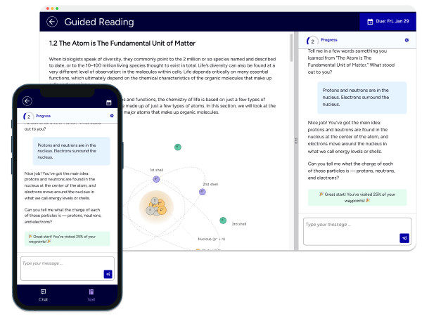
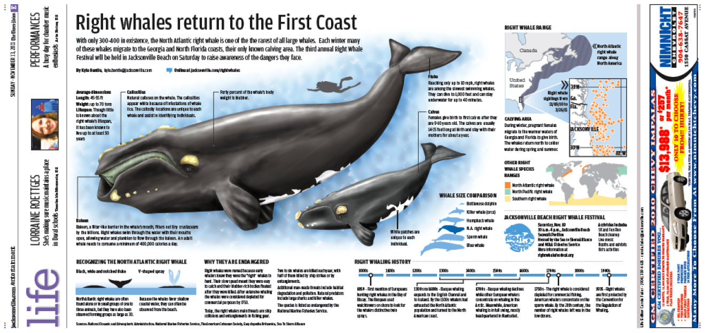
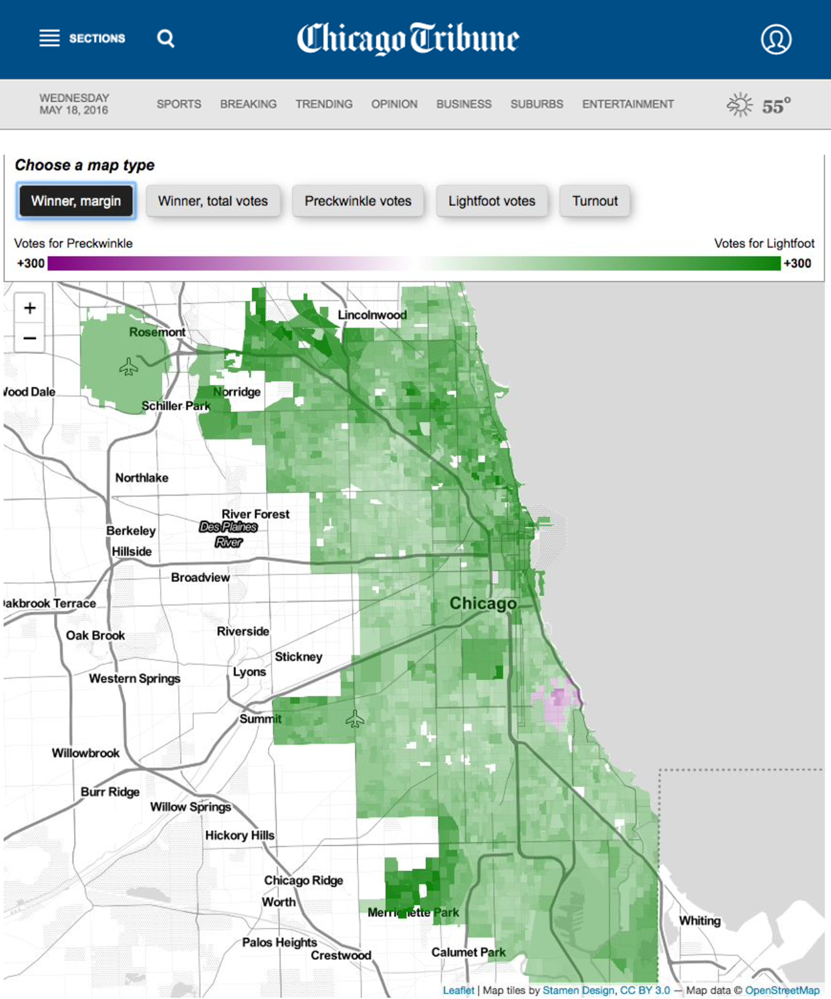
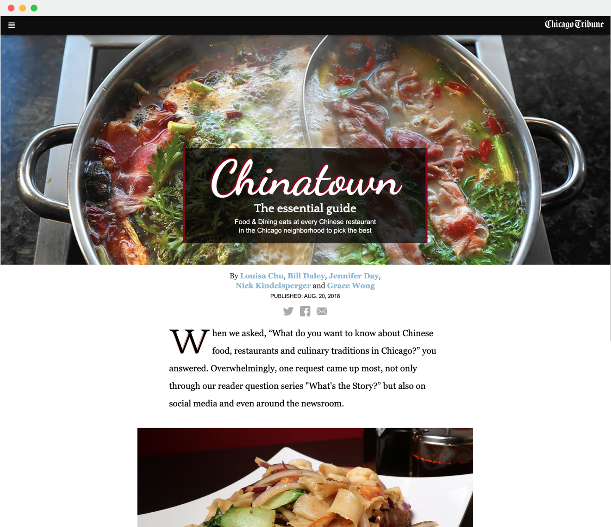
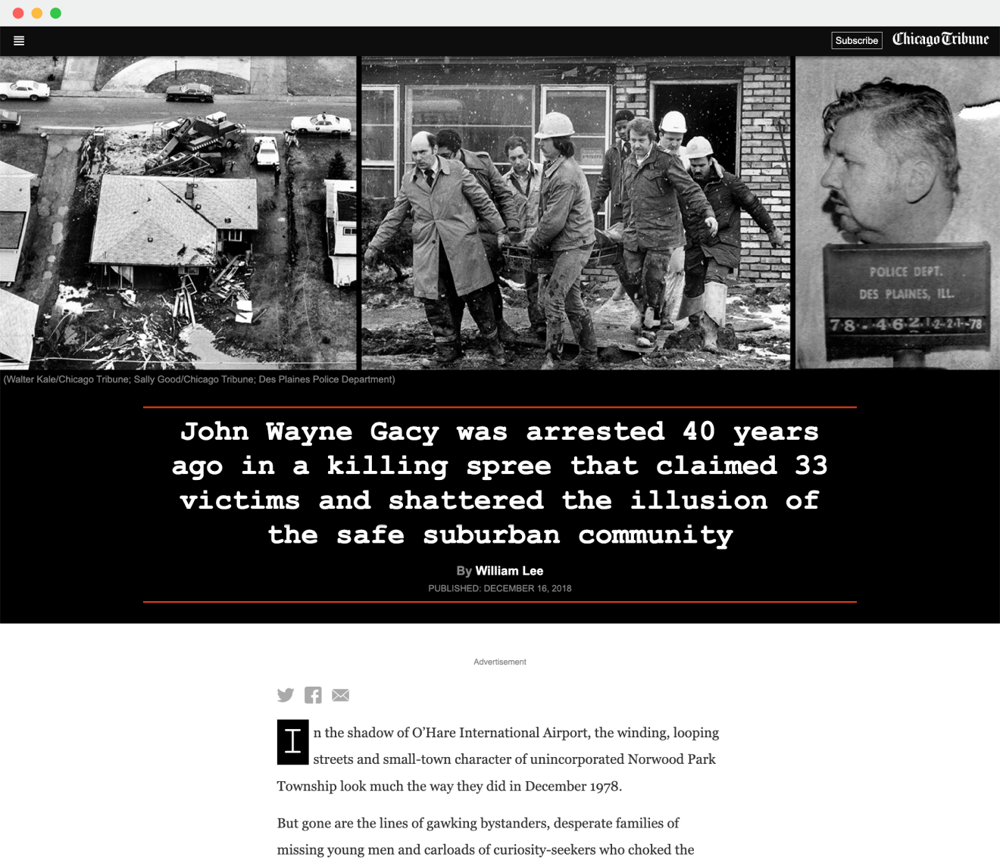
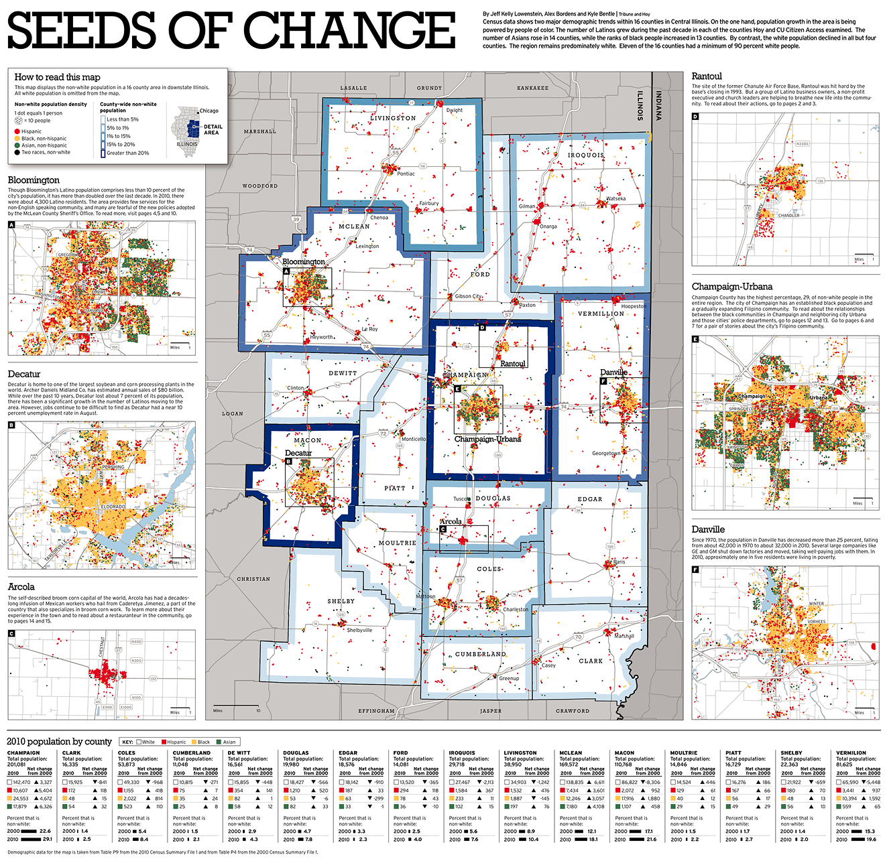

Formative Journalism Experience
Ten years as a data visualization journalist.
Florida Times-Union → Chicago Tribune → UX.
I came to UX later, spending a decade working as a journalist. During that time I wore a lot of hats: Graphic artist, data analyst, data visualizer, reporter, copyeditor. All under the constant deadline pressure that comes with a 24/7 news cycle. That background still shapes how I approach design work.
The Career
From the newsroom to the screen
I graduated from Ball State University with a degree in journalism graphics, a program that spanned both journalism and graphic design. So along with the reporting and writing classes, I also had color theory, typography, and early web design.
My first job out of college was as a graphic artist at the Florida Times-Union in Jacksonville. I was making maps and charts, doing magazine cover illustrations, art directing photo shoots, and producing some interactives in Flash.

From there I moved to Chicago to join the Chicago Tribune as a data visualization journalist. The work got more specialized and more technical. This is where I leaned into code, teaching myself front end design, how to do deeper data analysis using tools like GIS systems, and building complex interactive visualizations using JavaScript libraries like D3.
The work I was doing at the Tribune was all about how a reader would interpret and possibly act on the information I was showing them. Once I decided it was time to exit the journalism industry, I realized I had been practicing a form of user experience design the entire time.



Skills
The instincts that carried over
The raw numbers aren't the story. In data visualization journalism, the numbers are raw material, not the deliverable. I spent years working with election results, crime statistics, economic data, and public health numbers, and the job wasn't to show all of it. It was to find the one thing the reader needed to understand, show it and get out of the way. That discipline runs directly into data-heavy UX work. The question is never "What data can we show?" It's "What is the key thing this person need to know right now?"
Storytelling matters. Every story I wrote or graphic I produced was an argument for why someone should care about something. That's the same as presenting design to a skeptical stakeholder. You're not describing what you did, you're making the case for why it's right and why they should care.
A decade of hard deadlines. A 24/7 newsroom measures time in minutes, not sprints. I did that for ten years. What it instilled wasn't a tolerance for cutting corners, it was the ability to move fast without losing the quality. Under pressure, I don't freeze, I don't spiral. I work.
Lead with what matters. In journalism, you put the most important thing first because you can't assume you'll have the reader's attention for long. That instinct runs through my design work. When I'm approaching a problem, I'm always asking, what is the single most important thing the user needs to accomplish right now, before I lose them?
Skeptical of the brief. Journalists don't build stories on press releases. The release tells you what someone wants you to say, the story comes from what you find when you push past it. In product design, that reflex applies to requirements. Those describe a solution someone has already decided on. The more interesting question is usually a level up. What problem are we actually trying to solve, and is this the right answer to it?
